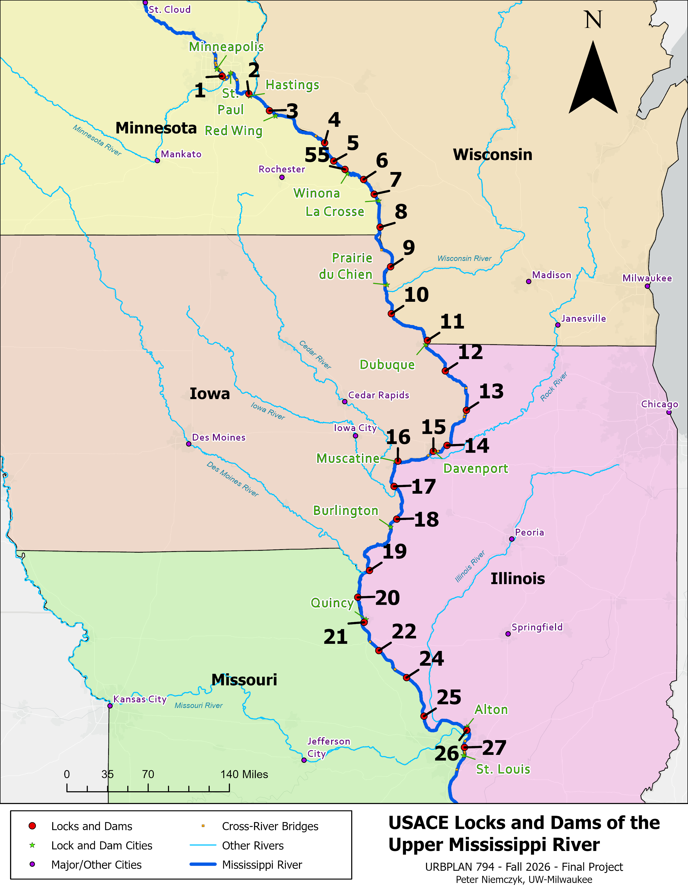

Project Description and Goals
This project helps people explore the complex and important system of locks and dams on the Upper Mississippi River, operated by the U.S. Army Corps of Engineers. Using GIS maps, historical traffic and commodity data, and publicly available live usage data, the project:
- Maps the locations of locks and dams along the Mississippi River.
- Allows users to explore changes in recent vessel traffic and commodity volumes over time (2016–2025).
- Presents historical and live lock-level data through an interactive ArcGIS Experience Builder application.
- Click here to view the interactive ArcGIS Experience Builder.
Overview of Locks and Dams
The U.S. Army Corps of Engineers oversaw the construction of locks and dams on the Upper Mississippi beginning in the 1930s, following the approval of the Nine-Foot Channel Project. Locks and dams help maintain navigable conditions, including sufficient channel depth, along portions of the Upper Mississippi River. They regulate water levels and facilitate vessel traffic, allowing boats to move through the river’s changing elevations.
- Lock chambers raise or lower vessels as they move between river pools at different elevations.
- Dams help maintain navigable pool elevations, particularly during periods of low water.
- This system allows large quantities of economically important commodities to move by barge and towboat.
The Mississippi River
The Mississippi River is the second-longest river in the United States, flowing roughly 2,340 miles south from its headwaters in northern Minnesota to the Gulf of Mexico. It ranges from narrow headwaters to more than 11 miles wide at Lake Winnibigoshish in Minnesota and reaches a depth of approximately 200 feet near New Orleans, Louisiana.
The Mississippi River is also a major transportation and economic corridor, supporting the movement of agricultural and industrial commodities, commercial and recreational boating, and water supplies for more than 20 million people.

Exploring the Data and the Mississippi River
Data Sources and References
- USACE Lock Data
- River Shapefiles
- List of Locks and Dams of the Upper Mississippi River
- USACE Overview of Upper Mississippi River
- State Boundaries Shapefile
- List of Bridges/Crossings of Upper Mississippi River
- Facts about Mississippi River
- Mississippi River - Wikipedia
- Lock and Dam #19 Livestream
- Lock and Dam #15 Livestream
- USACE Lock Status Report (Live)